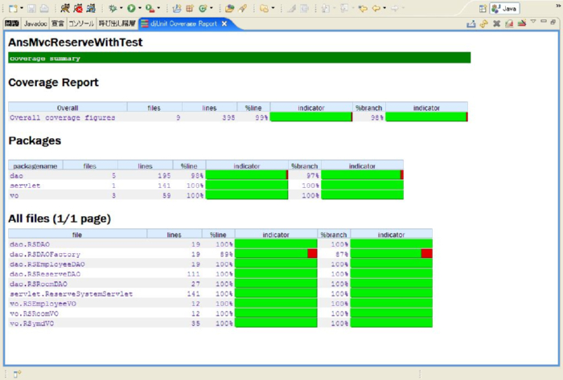
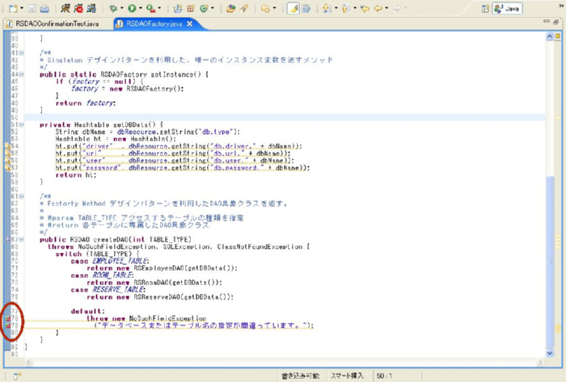
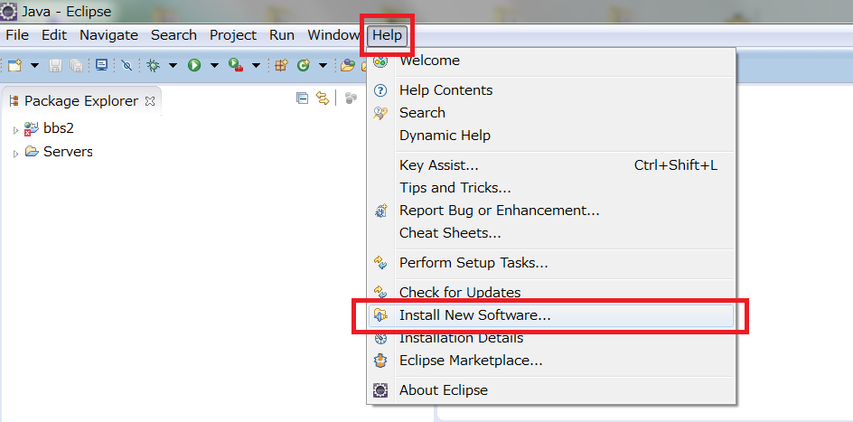
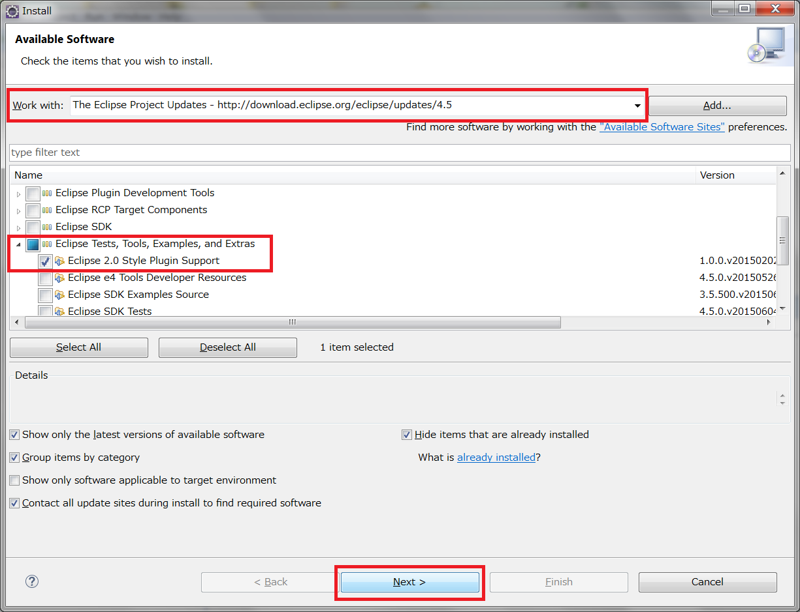
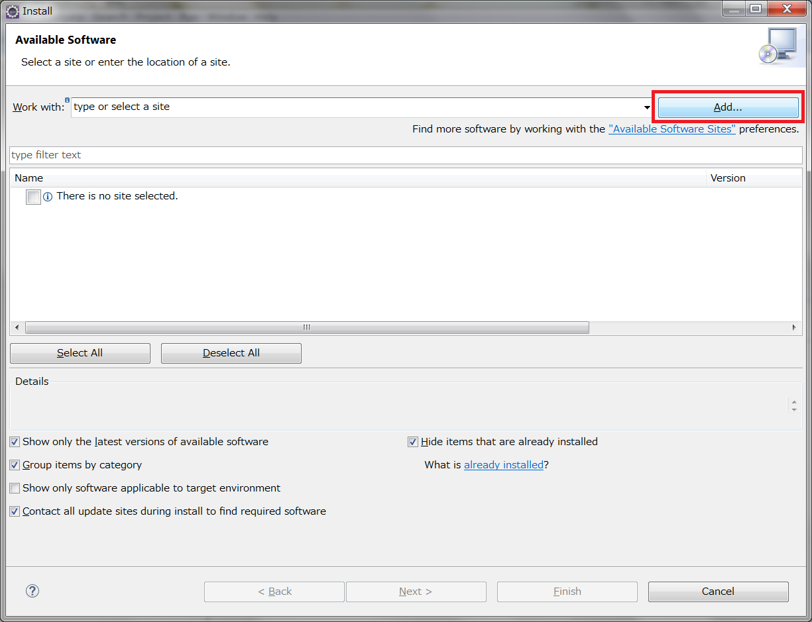
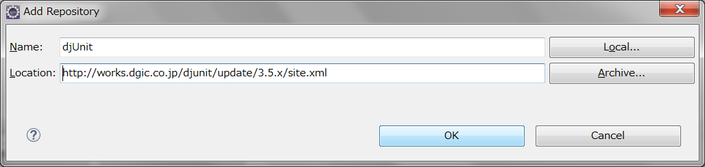
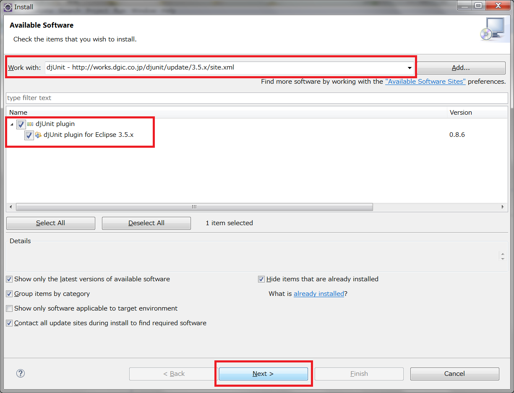
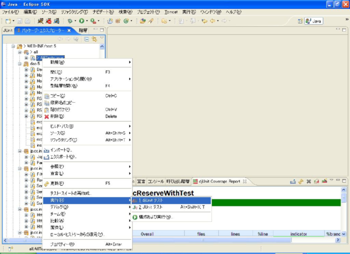
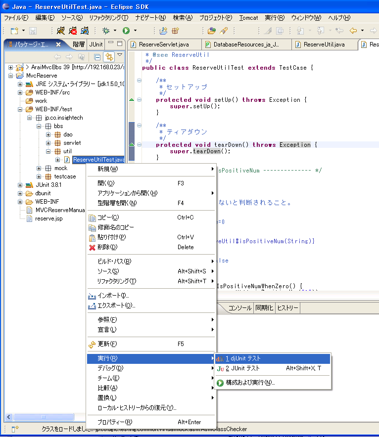

カバレッジの確認
カバレッジの確認
ユーティリティクラスの JUnit テスト実施が終わりました。
コーディングした JUnit テストケースが全て緑になりましたが、果たしてそれでテスト終了なのでしょうか？
ここでは、「テスト終了」の目安として、コード・カバレッジを使用することにします。
「カバレッジ」は、コードの命令や分岐がテスト中にどのくらい網羅されたかを示す指標です。
しかし、直交表や JUnit のコードを見るだけでは、カバレッジ状況を判断する事は困難です。
JUnit では、カバレッジをグラフィカルに見るためのツールとして、djUnit が用意されています。
ここでは、djUnit の簡単な説明と、Eclipse への導入、使用方法を紹介します。
djUnit
実際にdjUnitの画面を見てみましょう。
下の図が、djUnitのカバレッジ状況を表すビューです。
プロジェクト全体、パッケージごと、各Javaファイルごとのカバレッジが表示されています。
緑がカバーされている割合で、赤が未カバーの割合です。
現在、全体的なカバレッジが98%ですので、網羅率100%まであと少しの状況を表しています。

ここで、赤くなっている「dao.RSDAOFactory」のリンクを押すと、ソースコードにジャンプすることができます。
その際のコード内の様子が下の画像です。
丸で囲んだ部分に、緑と赤のバーがまじったアイコンがあり、コードに黄色い下線が引かれています。
この部分が、テスト実行時に実行されていないコードになります。

どのようなツールか想像できましたか？
後どのくらいテストを書けばよいかの目安となるグラフを表示し、テストが終了していないのはどこかを教えてくれる便利なツールです。
djUnit を使用するための Eclipse の設定
- ※ Eclipse の version が 4.4 (Luna) 以降の場合
djUnit プラグインをインストールするには、まず、"Eclipse 2.0 style plugin Support プラグイン" をインストール必要があります。
Eclipse のメニューから Help > Install New Software... を選択します。

Work with で、「The Eclipse Project Updates - http://download.eclipse.org/eclipse/updates/4.5」を選択し、
「Eclipse Tests, Tools, Examples, and Extras > Eclipse 2.0 Style Plugin Support」を選択して Next ボタンを押します。

後は、画面の指示に従い、プラグインをインストールしてください。
- djUnit プラグインをインストールします
Eclipse のメニューから Help > Install New Software... を選択します。
djUnit プラグインの更新サイトを登録するために、Add ボタンを押します。

下記の情報を入力して OK ボタンを押します。
| Name |
djUnit ※好きな名前で構いません |
| Location |
http://works.dgic.co.jp/djunit/update/3.5.x/site.xml |

今、追加したサイトが Work with で選択されていることを確認して
「djUnit plugin > djUnit plugin for Eclipse 3.5.x」を選択して Next ボタンを押します。

後は、画面の指示に従い、プラグインをインストールしてください。
- djUnit がインストールできたことを確認します
下記のように djUnit の実行表示が現れていればプラグインの設定が完了できています。

djUnitを使用したテストの実施
テストクラスを右クリック→[実行]→[djUnitテスト]

下記は実行結果です。カバレッジは52%ほど。テストも失敗しています。まだまだというところです。

©日本インサイトテクノロジー株式会社
この研修では、djUnit を使いますが、プロジェクトでは、Jacoco 等、他のカバレッジツールの使用も
検討してください。